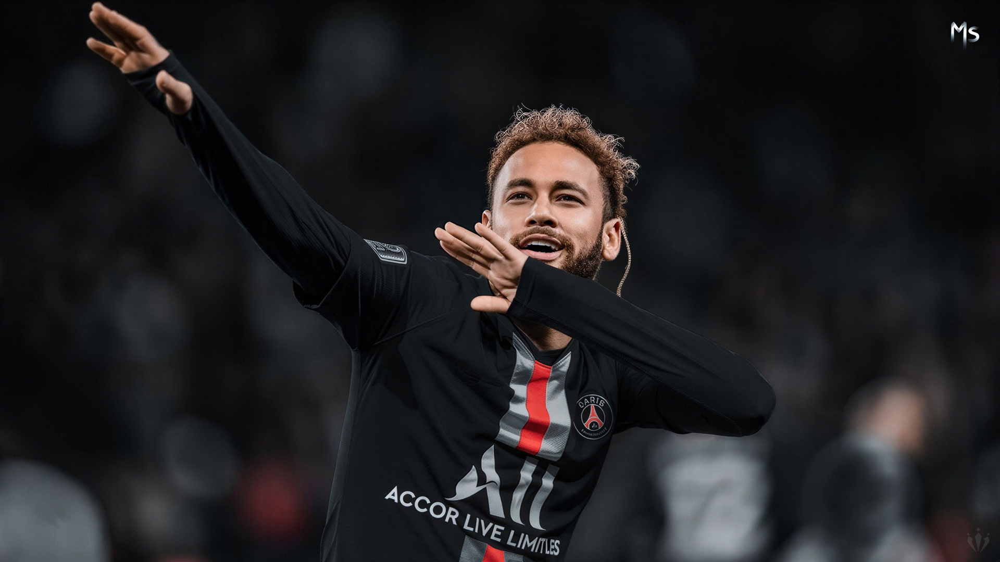
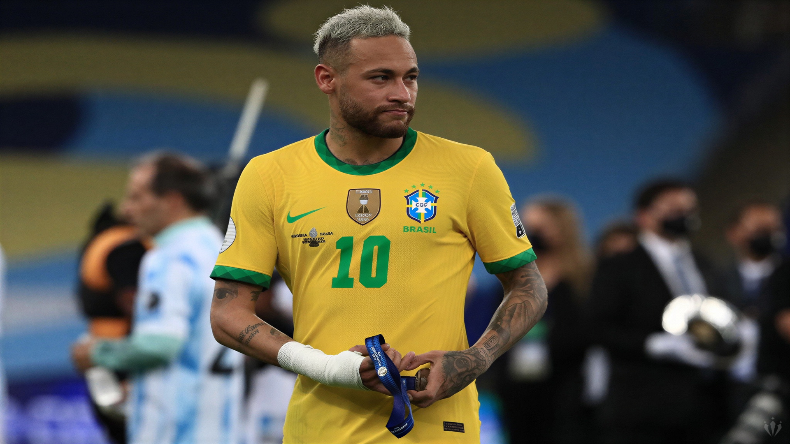
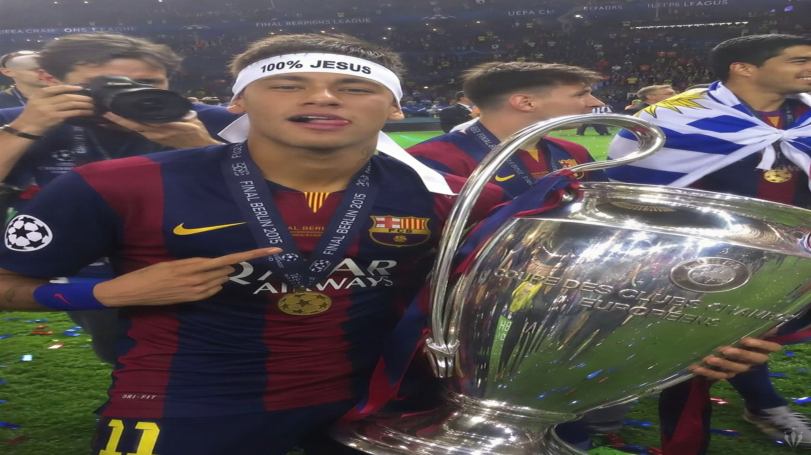
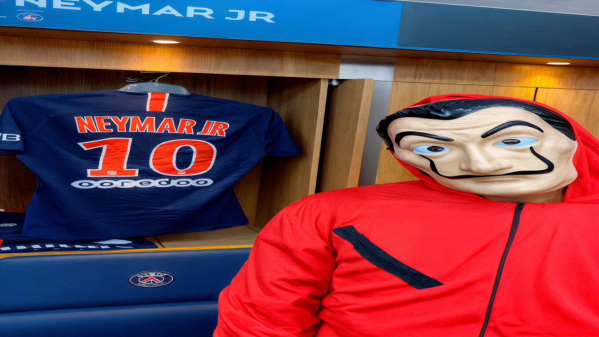
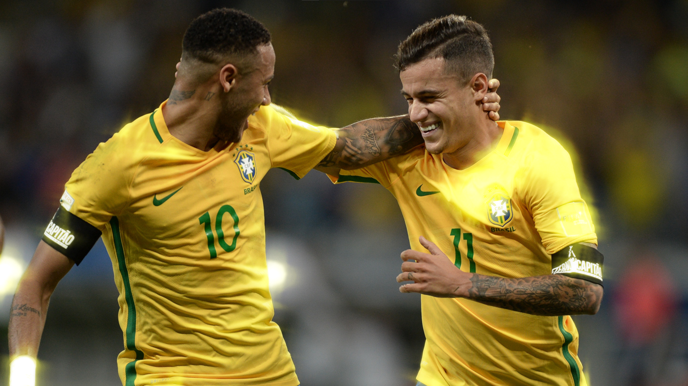

⚽ A Jornada do Neymar 🐐
Do sonho à glória: você conhece a história do craque?

O começo de um sonho
Imagine que você está começando sua jornada no futebol. Seu maior sonho é chegar ao topo, jogar em grandes estádios e conquistar títulos, assim como Neymar.
Neymar nasceu em Mogi das Cruzes, São Paulo, em 5 de fevereiro de 1992. Desde jovem, chamou a atenção por seu talento com a bola.
"Todo grande sonho começa com alguém que acredita que é possível."
Preparado para testar seus conhecimentos?

DESAFIO 1 DE 10Onde tudo começou?
Em qual clube brasileiro Neymar ganhou destaque nacional ainda jovem?

DESAFIO 2 DE 10O início da caminhada
Neymar chamou atenção no Santos por seus dribles, criatividade e habilidade. O que podemos aprender com isso?
O salto para a Europa
Em 2013, Neymar deixou o Santos para jogar em um gigante europeu. Qual foi o clube que o contratou?
O trio inesquecível
No Barcelona, Neymar formou um ataque histórico ao lado de dois grandes jogadores. Quem eram seus companheiros no famoso trio MSN?
 DESAFIO 5 DE 10
DESAFIO 5 DE 10
Uma conquista histórica 🇧🇷
Nos Jogos Olímpicos do Rio de Janeiro, em 2016, a seleção brasileira masculina conquistou uma medalha muito especial no futebol. Qual foi?

DESAFIO 6 DE 10Uma nova missão
Em 2017, Neymar foi para o Paris Saint-Germain. Essa transferência marcou uma nova etapa de sua carreira.
Qual atitude é importante quando começamos uma nova fase?
DESAFIO 7 DE 10
O sonho da Seleção
Neymar representa o Brasil em competições internacionais desde jovem. Qual é a cor tradicional da camisa principal da Seleção Brasileira?
Talento e dedicação
Neymar é conhecido por sua habilidade técnica e criatividade. Mas qual combinação ajuda um atleta a evoluir?
Uma lição para a vida
Ao longo de uma carreira, existem vitórias, derrotas, críticas e momentos difíceis. Qual é uma boa maneira de lidar com os obstáculos?

DESAFIO 10 DE 10A mentalidade de campeão 🏆
Chegou a última pergunta! Se você tem um grande sonho, como pode começar a transformá-lo em realidade?
Ops! Não foi dessa vez.
O Santos foi o clube em que Neymar ganhou destaque no futebol brasileiro.
Errar faz parte do aprendizado. O importante é entender a resposta e tentar de novo!
Levante a cabeça!
Nem toda escolha leva ao caminho certo. Isso também faz parte de aprender e melhorar.
Não transforme um erro em motivo para desistir. Use-o como oportunidade para crescer.
Quase lá!
Essa resposta não está correta. Relembre os momentos da carreira de Neymar e tente mais uma vez.
Até os melhores atletas precisam estudar, praticar e aprender constantemente.
VOCÊ É UM CAMPEÃO!
Parabéns! Você chegou ao final da Jornada do Neymar e aprendeu sobre momentos importantes da carreira do craque brasileiro.
Neymar começou a chamar atenção ainda jovem no Santos, jogou no Barcelona e no Paris Saint-Germain e conquistou a medalha de ouro olímpica com o Brasil em 2016.
🔥 Nunca se esqueça!
Você não precisa ser igual ao Neymar para construir uma história incrível. Encontre seu próprio talento, trabalhe pelos seus objetivos, aprenda com os erros e continue avançando, um passo de cada vez.
Grandes sonhos precisam de ação. Comece hoje, mesmo que seja com um pequeno passo!
FIM DO DESAFIO — SUA JORNADA CONTINUA! ⚽🇧🇷